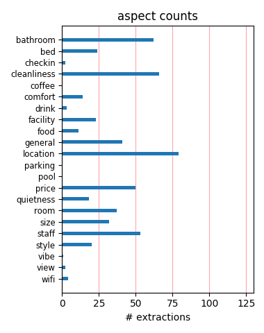
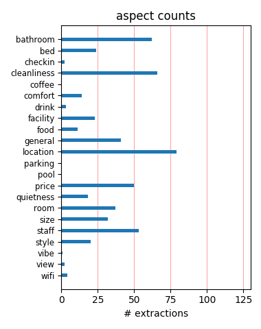

This hotel was great value and I got everything I would expect from it. The room was small but kept clean. I felt safe and it wasn't too noisy. The shared bathroom was clean and the shower was hot. What more can you ask for?
We stayed at the Latham Hotel for 4 nights and it was a very basic, clean, well located hotel. For the price we paid we did not expect the Hilton but it was to our satisfaction. If we decide to stay in NYC again we will definately stay there.
This was an ok hotel, very centric, good staff, slow elevator (old one) but worth it, it was very cheap!, the toilets was more than ok! And the mothers with children that lived there did not bother me at all. good temperature in the rooms..... I would stay there again!
Do yourself a favor & move onto the next property This place is the most ghetto, disgusting, gross, over priced, scary, fire hazard that I have ever seen. Can't even believe that the would still be in business. & all the single young mom's in the building....WTF!!! STAY AWAY FROM THIS HOLE
Instead of the booked double room, they tried to put us in a tiny room with two sets of bunkbeds with saggy springs and thin mattresses. The automatic elevator was out of order - for days and days. the only elevator had to be manually operated by the too few hotel staff. We were stranded on the 11tth floor 3 times in 2 days.
was a bit worried when i booked this hotel as it is a hotel/hostel. but on arrival could b more pleased with the service we recieved. lovely staff, very helpfull, room was small but enough as when visiting a city like new york u r not there to spend ur time in a room.clean towels n freshly made beds everyday. was a central place to stay,
I arrived at the 26th as booked, but they had no bedroom with a bath (like we booked), gave us a room without a bathroom, and with bed bugs (LOT's). We changed room twice, but still there was bugs and no bathroom. We canceled all our other nights, booked another hotel and they offered the night (just some hours) we stayed there and said there were no charges applied.
My boyfriend and I spent the weekend at The Latham I read all the reviews but we needed a place to stay that gave us access to everything on our itenirary I am glad I chose this cheap place it has a vintage feel to it I was comfortable. Everything is in walking distance we are both from nyc originally and know that everything is not glam we will definitely stay again
Many people live in this building. Many children. A lot of noise early at morning. The social elevator was not working. The service elevator was terrible. It tooks a lot of time (sometimes tooks 10 minutes to reach). Some staff were rude and unpolite (some others no). The room is small and dark. The only thing I liked was that the hotel was near the subway (green line and broadway line).
Okay it's very basic but can't be beaten for location right off 5th Ave and round the corner from Empire State Building. I would advise a room with en suite bathroom however. If you just need a place to sleep then this is fine. The rooms may be shoddy but ours was very clean, the bedding and bathroom couldn't be bettered. I found the staff very helpful and pleasant and couldn't be faulted.
Just returned from NYC. Had a room with a bathroom on a lower level at the Latham. It was better than I expected. The room and bathroom were small but clean and I got fresh towels each day. I took a quick look for bugs and mice but saw none during my stay. Both elevators were in operation when I was there. And overall it was a good sleeping room and I think paying a bit more for a bathroom was worth it.
This place definitely did me well during my one-week stay in NYC. Where else could you pay $65/night in Midtown Manhattan? The room was clean, bigger than I'd expected, and well appointed. The shared bathrooms were always clean, well stocked, and ready when I needed them. My only complaint is that the hotel occasionally got too warm, but I just opened my window. Great bargain. I'm going back in November.
This hotel is probably really old, but clean and we had a quiet floor! we had shared bathroom: they were cleaned many times a day, always perfectly clean! the room was small but quiet, we had tv, A.C, telephone. the staff wasn't really smily but who cares? the location was perfect! halfway between the Empire State Building and the FlatIron Bldg! we spend 10 days in this hotel and we will definitely go back next time!
hi me and my boyfriend stayed at latham hotel the location was the best rite near 5th avenue and all the fab shops. The room was very small and dark but bed was ok the lift never worked but for the money it as good. I payed to have a private barthroom in my room but the toilet did'nt flush. My advise is stay at latham hotel if u want a cheap stay. Staff were very friendly and helpful. ps. Would go back for the location.
Overall, the hotel was great. It was in a good location, only 2 blocks from a subway station and near a lot of great attractions. The room was REALLY small, but I was staying there alone so it was no big deal. They have air conditioners, which isn't always a given in New York City. The only complaint I had was the shower- it was TERRIBLE, had absolutely NO water pressure at all. All of the employees were extremely friendly. I'd stay there again.
This hotel is in a perfect location for sightseeing, just around the corner from Empire State and a subway station in the same street. The front desk staff are very friendly, there are a few mothers with children staying but are no problem at all, this is a budget priced hotel , the rooms are for sleeping only which is why we were there, as the days are spent out in the streets, the lift is slow but if u can deal with a few minutes wait no problem.
We had read some dreadful reviews before visiting, but actually found the hotel to be good value. The room was quite clean, and the private bathroom was kept very clean. We felt the best part about the hotel was the location, which was very central for mid-town Manhatten (and next door to a great deli!). The worst part was probably that the freestanding bath rocked when taking a shower. The staff were helpful and friendly. All in all a good value place to stay.
We stayed in the hotel for five nights, and unfortunately the rooms have a central heating system which becomes increadibly hot. It felt like 85F (30C) in our room, so that sleeping was very hard. On top, we did not have a window to cool the room, but an air condition which was super loud. If you plan on doing a lot during your stay in NYC, I would suggest to stay in another hotel so you will get a good night sleep! On the plus side, the location is very convenient.
This place cannot be beaten for its location, right in the middle of manhattan. Stayed with friends so the hotel room really meant nothing to us just a place to sleep and leave the bags....the rooms are tiny, you feel like your walking through a prison but we didnt care because we were there to see New York!! Stayed on the 12th floor, i think the lift only worked when we got there and when we were checking out!! definitely a hotel for people who do not care where they stay!!!
just spent 4 nights at the latham hotel, what can i say it aint the ritscarlton but in saying that it was clean the staff were very frendly and helpfull, ok the lift was'nt the fastest and their was no hot water 4 a few hours on the 3rd day not the end of the world .the price was right the location was spot on i would stay there again .the hotel does seam to have a few single mothers staying their but dont let that put you off thay also were frendly . to the staff at the latham thanks
I enjoyed my stay at the Latham Hotel. The room was clean. The room was warm (for my January stay). The TV worked well. The location was good. This hotel was about $200 less than other hotels. Considering that, it's an excellent value. The staff was great. The elevator was a little slow, but I was on the 5th floor so I walked up frequently. But, the friendly staff often used the service elevator to assist guests. I would recommend this hotel and I would stay at this hotel again... soon!
Okay the room we had is not very big, but the location is perfect for a touristic city trip. Our room was on 12th floor, with king size bed and private bathroom. All was good and very clean. Room is warm, window could not be openend. Airconditioning was working good, but is noisy. Elevator is slow but never let us down during 7 days of our stay. Hotel also has mothers and children living in; never heard any noise. Staff is very pleasant. Just around the corner perfect breakfast spot: Cafe 28!
When I arrived at the place! It looked nice and clean from outside, not bad in the lobby (old) but not bad, when you go to the room, that was the scary part, they have actually put 2 sets of bunkbeds in the room, mind you the room is about 100 SQ ft tiny . Me and my friend could'nt walk or sit to have a conversation. No good i would rather spend 20 to 40 dollars more and stay in a better hotel, they should not allow having those rooms like that. I would recommend for everyone to find another hotel.
What a complete dump. One filthy bathroom with one shower and one toilet shared with everyone else on the floor (20 rooms, men and women). Impossible to get in and toilet blocked 4 out of 7 days stayed there (also boasts fag butts in soap dish - nice) The Latham is a filthy, disgusting place with welfare residents (dozens of screaming babies + weirdos), one really slow lift in entire building, dodgy blokes hanging around outside and rude, uninterested staff. Pay the extra for somewhere better - wish I had.
When I tried to check in the guy behind the counter was on his mobile for 10 minutes to a mate laughing and joking and ignored me. He then answered a call from a hotel room and proceeded to shout at them about something. I was meant to be a single room but had a room with 2 bunk beds in which was extremely cramped even if I did have it to myself. The rooms were clean and the hotel was in a good location. One of the lifts as not working which led to long delays waiting for the old lift to arrive - if at all.
i have been here last weekend for about 3 days 2 night me and friend had a small room.. but for me it was fine as long as no bugs and generally looking clean. the toilet was fine and good basically it was just a fine hotel not so comfortable because of the phone in the room kept ringing and i just put off the phone cover so that it wont ring and the bed is kind of noise and shaking but it was fine after all one of the staff , i dont know his name but he is one of the guy there he is so kind and helpful !!!!
It was old and needed a total overhaul the bathroom was appauling everything was falling to bits, the paintwork in the room was all chipped and dirty. The bed was like sleeping on a plank, the heating was noisy there was a hole in the window next to the air conditioning that blew a gale through bearing in mind we are talking December. The only good thing I can say about the Latham is the location and the staff were friendly. It gave the impression when you walked in reception that you were at a hostel or the YMCA.
I am relocating to New York and simply needed a place to sleep while I spent my days apartment hunting. The Latham hotel was a great for my situation, as it is in a great location(situated right off of 5th Avenue), and extremely close to subway. I was able to catch the winter special rate for $80/night which was great, especially for that time of year. The young lady working the desk was extremely pleasant and provided assistance whenever needed. I would definitely recommend this hotel for anyone with a short stay in the city.
When my friend booked the latham we were charged €450 each for 4 nites. this works out to be $600 dollars. what we got was just shocking. Rooms filthy, a horrid smell , it seems to me mnaybe a substitute for an insane asalum. on one of the mornings we were awoke to a man screaming for one hour.not good Location was great but found taht we were screwed over, how they got hotel status i dont know, If your considering a trip to new york if ya have any sense pay the extra dollars and stay elsewhere, anything else can be better than latham
Stayed for Five nights in the beginning of december. The room was clean and a fair size for a twin enough storage space for myself and my sons belongings. We shared the bathroom which was clean and nearly always available no real long waits. complimentary shampoo and soap was supplied. Great location two minutes from the flat Iron building a five minute walk to the Empire state building close to the subway. Lift a little slow but you can always walk, a few residents but always polite Over all a good location hotel for those on a budget.
The Latham Hotel is well situated in midtown manhatten just around the corner from the flatiron building. The room was better than we expected; it was clean with air conditioning, tv and sink. A couple of slight negative points is that all the electrical items in the room were plugged into one socket which kept shorting out and having to be reset. Also the place could do with more bathrooms as there is only one bathroom on each floor. Overall I would reccommend this as a good value place to stay if you are not looking for luxurious surroundings.
dear people I went there at christmas and new year 2008. Very bad service, the bedroom was always cold,the heating didn't workt so well also the shower to. I am very sas about it, because i wend to new york city for a few times,but this hotel was the first time and also the last time for me. There are also a lot of children with there mom's,i mean it's like a care centre for single mothers. I have booked my hotel online, with hotelroom365 and they recommended me this hotel. friendly greets and i wish every one a good and nice trip to New york city
Bed bugs, mites and even dirty sheets. (hair on sheets and what looked like multiple stains on sheets too, possibly blood...not joking here.) I knew I wasn't getting a four star hotel because of the price, but the fact that this hotel is charging anyone any amount to stay here is appalling. Asking the staff questions resulted in them mumbling to me in jumbled sentences. At night I heard people yelling in the hallways, and the elevator never came and had to use the stairs. I never write these things, but how this hotel continues to stay in business boggles my mind.
My boyfriend and I stayed here on our first ever vacation together. It's extremely basic, but does exactly what you need it to. We were there to sleep and that's it. Afterall, you're in New York City for god sake!! How can anyone complain about that? The bathroom was always extremely clean and tidy. Although I'm not a fan of the 'shared bathroom', it turned out to be fine... Overall this hotel is fine. The holiday was fantastic and the hotel didn't add or take away from it one bit. There are single mum's living there, but really... who cares?! It is what it is!! :-)
Wasn't quite sure what to expect of the Latham when I arrived, but I have to say mostly it was fine. It is on the basic side, but then as others have said, your not in New York to stay in your hotel room. My room was simple, I used the toilet/bathroom down the corridor. But it was fine for sleeping. Location is great, with the Empire State Building not far away, a two subway stations nearby. I should add too that I found the area fine, even coming back at 3.30am! I would say if you want a good value place to stay, but don't want to share a dorm in a hostel, go for this place
I've chosen this hotel because of its price and location. It's only one block away from the 28th St Station and a 7-minute walk from the ESB. We had a room with a bathroom for 2 persons, which was clean and tidy but totally basic. We stayed there in December 2009. I couldn't sleep at night because it was too hot and the radiator was extremely loud. There's a pension mainly for single mums in the same building but that didn't cause any problems.There's a deli on the corner with quite good food and reasonable prices.The building would be nice and decadent when renovated properly.
Stayed here for eight nights, which was not bad at all. It's hard to beat a double room for 90 dollars a night in central Manhattan. The location is fantastic, just a few blocks from Empire state building. The rooms were quite all right, a bit old and worn, but otherwise fine. I guess you get what you pay for. I personally would not have opted for the shared bathroom again. With one shower and one toilet (in the same room) on each floor, you had to wait in line for some time each morning. The staff was mostly friendly and helpful, and there is a computer with free use Internet in the lobby.
We knew the cost of accomodation in NYC was incredible and for that amount of money, the hotel was alright. We had a room with a shared bathroom and unfortunately, we heard everyone coming and going in the choridor 'very nice at 2AM...). Appearently some families live in this hotel as we could see mums and their kids going to school every morning. It is a good value for money for NY I guess but I would not go back there should I ever come back to the city. The pictures give you a pretty good idea of what you can expect. On the other hand the man at the reception was very nice and helped us with anything we needed!
We just came back from our vacation in NY and we stayed in the Latham Hotel for 7 nights. The hotel is basic but the location is the best. The staff was very friendly and nice to talk with. We had a shared bathroom, it was clean but it could be better. (Ex. Hair in the drain for a couple of days) The location of the hotel is just perfect. It's right around the corner of 5th avenue, empire state building and Flat Iron. The room was perfect for us. We had a big closet, the television and the airco functioned well, big mirrors and the sink. We had a fantastic holiday!!! Thanks to the Latham Hotel (Shout out to the staff)
The hotel is in a good position but I think is the worst hotel in the city! At the reception at our arrival there was a man smashing a big cockroach. The elevator doesn't work very well and it'all twisted. The room was smelly of an unidentified substance, very small, noisy and with dirty sheets. The bathroom was so little that you couldn't stand in front of the toilet. The door of the room could easily be opened with a kick. It was quite scary to sleep there! The price is low but i would have spent more to go anywhere else. (Actually we cancelled the other night booking). If you go to Eastgate tower is 1000 times better!
The room was really really small and they could maybe clean there a bit better, but for that price (80 USD a night) and with that location it was not so bad. We shared the bathroom on that floor, that was ok, we never needed to line up there and at least they cleaned the bathroom well. It was nice and quiet at the hotel, we had no problems there. Service was not really that good, I think I never saw anyone from the staff actually smile there. But if you just need a place to sleep in Latham is a good option. Only a short walk from the hotel to for example Macys' & Empire State building and it's easy to go everywhere from there with the subway.
I've just come back from spending 10 nights in this hotel. I would never recommend this to anyone. Things that went wrong: No natural daylight, No storage for clothes, Telephone out of order, Only 1 thin pillow each, Bites from I presume bedbugs, Air-conditioning didn't work properly, When the aircon was on, dust and clumps of dirt flew through it. We had OVER 20 powercuts in 3 days, Windows didn't open. Good things; Location, Most of the staff were very helpful. The place was clean. If we could have found anywhere else in NY we would have moved, but we couldn't find anywhere. I've travelled in hostels and never stayed in a place as bad as this.
I am writing this review very late. But I am on my way back to the Latham in one week. I stayed in Jan 08 for 14 days. It is a great location and i enjoyed all of the staff there!! Stephen was a breath of fresh air. JP was also an awesome fellow. Along with many more of the staff. My room was cleaned when ever i needed it to be. And anything that i asked for there was someone to help out. Also they were doing some renos to the hallway and i never heard them at all. They gave me good information on shopping and for laundry places . My experience in NYC at the Latham was just Awesome! Thanks Stephen and Staff. See you in one week. Sherry from Canada
Wow, New York as an experience from the other end of the spectrum for me being from a small island in Florida(Matlacha). From the people of the front desk to the elevator couldn't have been more friendly, funny, and sweet... as if they were from Florida. Steven DeFazio "Motel operator" could not have been anymore informative and sharp about his recommendations from restaurants, things to do, and places to stay away from. One of my best experiences in New York was going to the Coffee Shop (66 Madison Ave). Had a hamburger that I will remember for the rest of my life. I re-booked to return to Latham on Dec 15 Thanks to Steve, and the Crew. I am so excited!!!
my partner and i have just returned from new york, we stayed at the latham and found it be a great little hotel, the staff really do go the extra mile for you and are very friendly and helpful, it was our first time staying here and we would definately stay there again. the hotel boasts a fantanstic location, near many of the local sites and attractions also near for the subway and other connections, we could not fault this hotel and its staff and would like to say thanks for looking after us guys!! so please travellers if you are looking for a great budget hotel in the middle of manhattan...... then the latham is the one. michelle and lloyd from london, uk.
Stayed here back in Feb and after returning home from some travelling noticed some of the other comments and though i would support. The hotel was not overly great though the room was big enough for one..... I can see the halfway house situation. Reception advised to be careful if coming in and out late at night. The hotels location was fantastic but the rooms are in seriouos need of a paint job and new furniture. The clealiness of the room left alot to be desired it was terrible i had to ask for a new shower curtain as the one i had was molded and torn the water went everywhere. I would not stay here again. I moved to a different hotel after 2 nights i could not stay there any longer.
A friend and I stayed in the Latham Hotel for four nights in early November. This is a basic hotel -- small rooms, no closet and, in our case, a shared bathroom. This hotel is clean, very well located, some areas seem to have been freshly painted and the bathroom had been recently redone. Perhaps those who have posted negative reviews are not aware of the overall hotel prices in NYC. If I had paid the same price (roughly $130 per night) at another location, I too would have been shocked at the bare-bones accommodation, but in NYC, this hotel is good value for money. Staff were pleasant and the room was nicely cleaned each day. I felt the hotel was very good value and I would stay there again.
I stayed at the hotel Friday the 2nd, and Saturday the 3rd. My room was located on the 11th floor and had a shared bathroom. There was a double bed, a television that sat upon a dresser drawer for clothing, sink with cabinet/mirror filled with toiletries, closet with hangers for my additional clothing. The room had a phone and a remote control for the television also. It was fairly quiet for the duration of my stay at Latham Hotel. If you are looking for a "1" star hotel in NYC - then this is the hotel for you. Having a shared bathroom wasn't a problem either - I didn't have to wait at all. There is also a great deli just around the corner from the hotel, they have many choices to choose from!
We were a party of four, staying in two rooms for five nights. A little bit worried about the rooms we arrived and were reliefed. Yes, the rooms are old and a litle bit worn, but they are clean and you get a lot for your money. We've been staying at more expensive hotels in NYC that were far worse. The elevator is not really slow, but one elevator for all the guests and the residents makes it busy. Most of the time it worked just fine, and when it was at most busy we never had to wait more than maximum 3-4 minutes to get to or room on 11th floor. The staff were as friendly as they can be. The location is perfect so if you're not planning on spending your time in NYC in your room all day, I can recommend this hotel.
I first went to NYC in 2007 and stayed in the Grand Hyatt, granted this is a much nicer hotel than the latham but the only time you should spend in a htel in NYC is the time you wish to sleep. I can't understand people writing reviews on here expecting the world when paying peanutts?! value for money was A* and the man we dealt with in reception went out of his way to help us anyway he could. The room was hot during the nights so we just opened the window, the communal shower room was spotless each morning and afternoon on our return. i'd highly recommend this hotel to anyone on a budget and realistic on what they should expect! if you don't like the hotel then it's the perfect excuse to spend more time out in NYC!
This is my home away from HOME. i always wnted an apartment in the city or a time share and with todays economic futureI have found the dimond in the rough that we were looking for MGR STEPHEN DEFAZIO and STAFF CANDY at the front deskmade my wife and myself feel rightb at home with thier knowledge of the city save me hundreds of dollars shopping for my wifes cloths .. THEY WENT ABOVE AND BEYOND AnY OTHER HOTEL WE HAVE STAYED. all the while never forgeting our name and adressing us with the profesionalism that we would get at the 400 dollar anite rooms up the street.LOCATION AND PRICE WAS THE DECIDING FACTOR. FOR A 100 YEAR OLD BUILDING CUDOS TO ALL STAFF AND MGR... I WILL RETURN AGAIN AND AGAIN... LOVE THE NEIGHBORHOOD......
The hotel is located very centrally on Manhattan, perfect if you want to explore the island! It is both a hotel and an apartment building where people actually live, but that was no problem. Nice people at the reception, helpful and smiling. I shared a room with a friend, the room was big and clean with two comfy beds, a TV, a dresser and a fridge. The bathroom was OK, but the last morning we had an encounter with a well-known bug in the bathroom - not too pleasant, but we put the roach in the garbage and felt a bit more safe :) All in all the hotel was good value for what you pay, not at all as bad as I expected! I would recommend this hotel for budget travellers, as long as a cockroach in the bathroom wont kill you. WiFi in the rooms!
I found this hotel when my husband and I booked a last minute trip to New York. It was very cheap and looked like a decent enough hotel on the website. I was quite unhappy with it in the end. The room was decent enough - but very old and down trodden. The hallways however smelled and looked like a hospital. The lift is very old and takes such a long time to come. I don't think the position is that good as some review say. Everything in New York is walking distance, but this hotel is not in the nicest area. That said, it comes down to price and if you are solely motivated by price - it's a cheap hotel. However, I do believe there are some good deals around at the moment and you can do much better. Even spending slightly more a night is worth it.
I don't really know what some people on here think they are getting for the price. I stayed at the latham from the 17th to 24th November 2008 and found it the perfect base for my stay in New York. It is wonderfully located and very reasonable at the price. The staff when I had reason to ask them anything were always very helpful(especially in arranging my transfer to jfk) and when I came back each evening from running round the city my room was spotless. I chose the shared bathroom option and never had any problem with it as it was clean each morning and night when i needed it. The room was warm to the point of been too warm but aside from that I have no complaints about the Latham and am planning a return whenever I have enough for another trip to New York
This is the first review I have ever written but I feel that I need to warn people about this hotel and how bad it is. I am quite well travelled and without doubt this is the worst hotel I have ever stayed in by far. A few words that don't even come close to fully describring how bad this hotel/care hostel is - run down, dirty, black, cr*p hole, unsafe, flea ridded to be honest you get the idea - truely aweful. People who are rating this hotel greater than terrible are having a laugh. It is more of a hostel / safe house for single mothers. The man on reception couldn't even speak English he could barely read. Dont get caught out by the website, it looks ok on the website but it is so far removed from reality. Do yourself a favour and stay away - stay well away!!!!!!!!!
This hotel offers some unbeatable prices. Bathrooms were clean. All staff were wonderful and helpful, lobby was nice. 3 minute walk to subway station. Elevator is a pain, but the conductors are friendly. TV had some real issues, couldnt get more than 2 or 3 channels, but this wasn't a major concern for me. There are the single mothers, but for the most part, they seem quiet, and didn't affect my stay AT ALL! That being said, I do have one complaint, and that was the gigantic cock roach scuttling across my feet as I stood up in the middle of the night. I am not squeamish about bugs, this was just the largest roach I have ever seen. Considering I was to check out in a few hours, I didn't see the point in having to go through the hassle of bringing management in. Not bad.
Excellent location, about 20 minute walk from Times Square, and 2 minutes from EmpireState and Macy's. Generally rooms and bathrooms were clean, did have a jail like feel when i first walked in, but beds were comfortable and you have a sink in your room, was a nice surprised to see a big TV with good channels in the room! Wasnt a real problem with having a shared bath apart from in the mornings when everyone needed the loo! Also Lift is unreliable one of them broke down when we were there could be a problem if your on top floor :S But for what you are paying for you have excellent location with basic accomidation, and the staff were also friendly and happy to help and advise you, and help with discounts on attractions within New York. A good place to stay if your on a budget.
i went with a group of friends to new york for the easter bank holiday, we just wanted a cheap room to stay in that was close to all attractions! This hotel suited us perfectly, it is very close to the empire state building and about a 20 min walk from times square! we paid a very low price fro this hotel in comparrison to other hotels in new york so i wasnt expecting to much but it was actually a suprise! we had bunkbeds in out room which were compfy, i slept fine! the bathroom was also better than expected! the lifts in the hotel take a long time which is a little annoying but overall it was a lot better than i thought it would be! If you are looking for cheap accomadation in a great loccation then go for this hotel! you dont go to new york to stay in your room all day anyways!
Had I know the rudeness of the staff and the quality of the rooms, I would have never stayed at this hotel. I reserved the PENTHOUSE and recieved a shabby room that was noisy and run down. Yes, I did have my own bathroom but other than that, worthless. The staff including the manager was rude and crude and just deplorable. I had a reservation for late checkin of which I called and spoke with the manager personally yet upon check in, my room was not available and listed as no show!! Called manager on it and he denied speaking to me, yet I wrote down his name when I talked to him. I travel to NYC 3-4x's per year and this beat all in terms of slum hotel. And dont forget the unwed mothers that live there and are rude to you!! Like its your fault they are down and out. I work for my living!!
The hotel was the cheapest we could find on Manhattan with reasonable reviews. It was clean and the staff were fine. The location was amazing and we could easily walk everywhere we wanted to go. Families waiting to be rehoused do stay here, but are no trouble at all. I wouldn't recommend the shared bathroom - it was perfectly clean but the toilet was blocked a couple of times. The lift is very slow and the radiator in the room was very noisy on our first night. The rooms are also very basic and in need of updating. There's a standard deli opposite and a posher one on the corner. We literally only slept in the room, we stayed out most of the day and well into the wee small hours, so the hotel meets our needs. Fine if you want to go budget and can put up with very basic room for incredible location.
We stayed at the 'hotel' for 3 nights. The first night was awful, the heating was too hot so we did not get any sleep. Me and my friend had to share a double bed, there was also a single bed and a camp bed in the room for my other 2 friends. It was only supposed to be a double room.We were told we were going to have a room with 4 bunk beds, so a double room was a shock. You coudn't move around the room because of the extra beds, this must have been a fire hazard. We could hardly get through into the bathroom. The room was quite clean but the floor could have done with a good hoovering. There was nowhere to hang clothes so we had to keep everything in our suitcases - locked as it was not very safe. I think they use the hotel for social housing as well. The only good thing about it was the location.
I stayed here November 08 and enjoyed it thoroughly.Planning on making it my base for a 2012 trip as well. Room was cleaned daily, staff at reception I found helpful with arranging my transfer to the airport and also in givin directions to some of the places I was going. Room tended to get incredibly warm in the middle of the night which was a slight irritation but New York was having a major cold snap so it was appreciated on some of the days. No problems with noise.Used the shared bath and was either lucky or using good timing as it was always available when I needed it. There did always seem to be a queue for the elevator whiich I didn't use until my very last day there (bag had swelled with shopping).Overall no major complaints about the Hotel. The halfway house element wasn't really an issue for me aside from the elevator queues
I went with a group of friends to New York for Thanksgiving, staying at The Latham Hotel for five nights. We had three en-suite rooms that were spotlessly clean, comfortable, warm and felt very safe. Although basic and the three rooms did have different highlights - one had a better bathroom whilst another was larger and had a better view - we all grew quite attached to the hotel during our stay. It is in an excellent location and the staff were great. The residents and children I met in the lift were friendly and polite and the only time I saw or heard a child get overly excited was when they saw the Christmas Tree in the reception area for the first time! Overall our experience of New York was wonderful. If you are looking for a budget hotel that offers excellent value for money you wont find much better than The Latham and it's staff.
my mom and chose this hotel because we wanted a budget room with a private bathroom and a good location. when we arrived we were told that our room was not ready. Not wanting to wast time as were only in new york for two nights, we left our luggage and went exploring. when we returned that evening we were told that there were no rooms for us. we booked and paid over a month before our arrival date. the manager was extremly rude to us and told us that they would give us a room with a shared bathroom, whch we were happy to accept provided we got a discount. seen as we had paid for a better room. however this was not an option, we could either take the room or find another hotel in New York. Her attitude was unacceptable, rude and unprofesional and we spent the whole eveing tryng to find a room in New York, which wasted more time and money.
This hotel is in a great location, the net cafe/restaurant on the corner is the best I've ever been to, the staff are friendly and the rooms are immaculately clean. The bedding was not ridden with bugs, the sinks were not dirty and the communal bathrooms are clean. The beds are averagely comfy and not at all like you'd get in a hostel. Nice big tv, phone, airconditioner. Quiet, no noise at night. Great price. What others were expecting I'm not sure, but it's not like the Hilton because you're not paying for the Hilton. The elevator is extremely slow, but look on the bright side, you can get to know the other people in the elevator by the time it reaches the ground floor :P I have stayed in hundreds of cheap and expensive hotels and I have nothing bad to say about this hotel. DO NOT LISTEN TO THE WHINGING POMS, THEY COMPLAIN ABOUT EVERYTHING!
I knew from the moment I booked this hotel that is was going to bed great. I read most of the reviews I could find about this place and couldn't care less about the bad reviews. NYC has made me love bagels and wraps. Or at least that shop less than a minute at the corner of the hotel did. It was great! The price! The location and the PRICE! I couldn't believe it. The room was a little small and we didn't have a washroom but the shared washroom on our floor was hardly occupied. I felt like it was our own private bathroom. We only used the Elevator once since we were on the 4th floor so we never noticed if it was every slow. I will alway suggest this place to my friends and family who every venture off to NYC. Thank you Latham Hotel. Without you guys I think we would have to take the subway which would have taken away from all the great walking we did. Great place!
First thing you should know is that this hotel is also a pension, people live there, specially single moms - they have a day care for children there too. I actually saw more residents than tourists during my 5 days. By that time (June 2011) just one elevator was in operation and they had this announcement next to the door saying that your waiting time for the elevator could be up to one hour. And they were not kidding, it was that slow. I always bumped into a bags of garbage, in the elevator or by my room door. Thats why the hole hotel stinks. Room (i had one with bathroom) is very very small. They gave me one with two single beds and when i asked for a double bed the woman in reception simply said "well, just put it together!". Guess they dont have double beds at all. Location is fine, but i´ll definetly pay a little more to stay in a slightly more confortable hotel nearby.
second time ive stayed here... was here for 10 days altogether with my girlfriend..... if you want to be in your hotel all the time then go stay at the plaza.. if you want a cheap clean friendly safe base to stay as you wander the amazing streets of New York then this is for you.... Looks a bit shaby, but its great.... the staff are brilliant especially the indian / mexican man who remembered my room number nad was always polite... the rest of the staff we saw rarely as we were never there but when we did see them they were great and always friendly..... Location is amazing just a few blocks from metro and empire state building... the deli on the corner is amazing but so is the deli opposite, the taco bell on the corner and the numerous other food and coffee places nearby... no noise in the hotel, great cleaning service and great hotel... definately stay here and recommend it again....
I had read the reviews prior to arriving so knew there was some kind of scenario with the shelter/kids etc but quite frankly this did not cause any kind of problem to us at all. We were above the nightclub and although we could hear some noise it never caused us any problem at all. The hotel manager was great and made our initial welcome to the hotel fantastic and so friendly. The reception staff were friendly and helpful and we made an effort to say hello to them and have a chat. The room and bathroom were very clean which was the main thing and basically we spent so little time in the room it suited our purposes perfectly. I would definitely recommend this hotel as who on earth wants to go to New York and stay in their room all day and night.!!!! All you need is a clean place to sleep and this hotel meets that criteria perfectly. Cannot find any fault with it. The location was AMAZING!
We stayed one night on New Years day at the end of our NYC trip. It was cheap with a great location so we couldn't say no. The room was basic and the bed was creaky but basically we just wanted a place to crash. I woke up in the middle of the night to a mouse jumping out of my backpack where there was a small amount of food I had left from the previous day. I followed the mouse to the wall heater besides the bed and found heaps of mouse poo all along the wall and under the heater. I called downstairs to see about a mouse trap which they informed me they didn't have any, but were happy to give us a new room without hesitation. I realize there are mice and critters everywhere, but in a hotel room where I want to be comfortable and sleep well, I would rather not know they are there. Clean up the evidence and set a few traps at the bare minimum. Besides that the trip was great, see you again one day NY! JP
I'm writing this review quite late, but I remember my horrible experience staying at the Latham like it was yesterday. I've read many of the other reviews, and agree with everything the bad ones say - the heating was swelteringly hot, the tub was rusting, the bed was thin and lumpy. I do have one bad point to add, though - our bedspread had a massive bloodstain on the underside! We didn't see this until the morning we checked out, because it was on the side that touches the sheet. Completely disgusting. And I agree with others when I say that this hotel is definitely used to house people on welfare - that should be advertised in all descriptions. We had to share the elevator several times with mothers and children who were foul mouthed and rude. Shocking. The reason I only gave a 1 on value isn't because I thought it was too expensive, but because it was completely disgusting even for the £90/night we paid a year and a half ago.
This hotel was good value for a money. I stay here in 7 night and this was excellent choice when you want low budget accomodations. I has single room with shared bathroom, there was also a tv in a room what was nice bonus. It was easy watch weather and some news. Building is old and rooms are not renovated but room was still clean. Window views was not the best one, there was wall about half meter from window so natural light not come inside a room. Bed was comfortable and housekeeping made bed every day and change towels. Shared bathroom was nice and also clean every time. One time closet going clog but problem was fastly fixed. Last eve i see one roach in my room but i think it this is normally in old buildings? Location was excellent, few minutes walking green and yellow lines metrostations, also timesquare and best restaurants and shopping areas are short walking. When i next time come New York, i surely come back this hotel!
Have just returned from a week in New York staying over Christmas. I picked the hotel for its location as the reviews on here are mixed. We had a room on the 12th floor with a shared bathroom. The room was very clean and everything within was to a good standard, the shared bathroom was very clean and no where near as "busy" as we had expected. The staff were excellent, and very helpful, polite ang genuinely courteous. I went with my partner (Both 30) and had no gripes with the hotel, the mothers and children that are the full time residents, were lovely and the kids very well behaved. We had no problems with the lifts as has been mentioned in other write ups. The location is excellent the price is very competitive i would certainly stay here again, the only small thing was that the hotel is boiling hot, but we slept with our windows open which easily solved this. You will not find a better quality better located hotel for the money.
Having read reviews on webpage , i felt a bit dubious about staying. On arrival reception were very helpful, when entering my room, I thought ok, what we got here then, a view of a brick wall, i wasnt bothered , I found it amuseing. I inspected the bedding and other parts of the room and was pleasently surprised. The bed was very comfortable, the sink was clean, the air con was working and cable tv was fully working. I soon grew to love it ! Shared showering room was excellent , always had hot water , one day I found a mess in the bathroom and reported it to staff and it was immediatly cleaned to my satisfaction. Lift was slow , which was expected as its a 12 floor hotel and there was only one lift in use. As for the single mothers and children who were also sharing the hotel, they were very polite and were no trouble what so ever. Fantastic location and fantastic deli (cafe 28} on the corner . LOVED IT !!!!!!!!! ILL BE BACK IN 2011 !!!!!!!!
After scouring the internet for reasonably priced hotels in Manhattan (an oxymoron in itself) we decided on Latham Hotel. The hotel was perfectly suited for tourists. ESB is right up the road and the subway is close by. We did a DIY tour of NYC and it wasn't hard or expensive to find our way back at night. We got an upgrade to en-suite on a high floor because they were booked out for the option we chose. The room was large, the heating worked well throughout the night in chilly winter and the traffic was not a problem at night. We are light sleepers. I can't remember but I think the bed was a bit small. The building is old, but I found the antiquated decor had lots of character. The old letter mailing system, large dialling telephones, many people would probably have issues with presentation, but the place is clean and you should rather allocate more of your budget to accommodation if you are picky. I am glad we booked at Latham. Would have no qualms going back there for another short stay.
Well I was not expecting a whole lot from this hotel but the service was pretty good.. They actually change your sheets everyday . There were some problems with the shared bath ... our shared bathroom had no knob to ajust the shower ... but there was a bolt there to turn it... The door knob fell off the door to the bathroom, but you could still open the door from the lock on the inside of the door. The toilet backed up... but they fixed it after being told about it. The room had a carpet but was a little sticky... I recomend wearing flip flops on the floor in the room and in the shower... The air conditioner work well.. kept the room real cool. There was a small refrigerator in the room that work real well... There were other people living in the building, but I believe they had their own bathrooms.. Mostly saw unwed mothers with there babies living there... Guess they help pay the mortagage for the building. So overall it was a decent place to crash, but I would not want to spend a whole day in my room...
My partner and I stayed in The Latham Hotel for 4 nights. We booked a double room with a private bathroom (recommended). Rooms are basic but are cleaned everyday with new sheets and towels provided also. The hotel is in a GREAT location, literally 2mins from Empire State Building and all the 34th Street shopping! Staff were very helpful and did what they could for us. The elevator is old and there is only 1 working, however, we were on the 12th floor and only had to take the stairs once! You just have to be patient with it! It will come! Subways are on the same street and lead to uptown and downtown New York so everything is so accessible from the hotel. From reading other reviews on this site, I must admit, I was a little nervous arriving at the hotel, especially since it was my first time in New York. But all i can say is that from my experience, the Latham Hotel was FINE. We got our moneys worth....and whatever money you save from booking this hotel, can be used on shopping!!! Thanks, Elaine & John - Ireland
Like most people who read this site, I was also worried about the hotel beacuse of the mixed reviews. I knew I wouldnt expect a 5-star hotel for the price of a 1-star. Overall I was satisfied with the Latham experience: the room was clean (and made up everyday as it should be), with a 21" TV, the bathroom (private) worked well and it was pretty neat, the airconditioner working perfectly and was enough to cool us off in the hot summer in NYC. The room is indeed old and dated, but again, I wasnt expecting a top-notch one with this price. Needless to talk about the location, its great: right on the corner of the 5th avenue, 2 blocks away from the subway in either direction, and close to great places to dine like Subway, Quiznos, Starbucks, Taco Bell :D Ah, and I cant forget to say about the "Cafe 28", a deli right in the corner which is open 24/7 and offers a great variety of options for breakfast or any meal. My conclusion is the mixed reviews are most likely due to different rooms but mainly different expectations.
The only good thing about this hotel is location, but that's it!!! The service at the front desk is terrible, they are simply rude and speak a poor English. I'm generally a very easy going person, but the way they treat their customers is simply appalling. Now, the room. I stayed in a double bed room with a private bathroom. Walking to your room is like walking through a prison - going through multiple doors in a narrow corridor with walls painted in dark colours. The room is very small and old. It seems like it was never renovated since it was first built. Likewise, bathroom looks pretty bad too with pipes exposed and bathtub in a very poor condition. I can only imagine what the public bathroom is like. The light was constantly flickering. And the walls are so thin, you can easily hear people next door - people screaming on the phone at midnight and little kids crying throughout the night. I paid $100 for one night, and honestly, I wouldn't stay here again even if it was for free. So please do yourself a favour, and stay elsewhere!!!
I just thought I'd better put in my two penn'orth, as there are conflicting reports about this hotel. Having read some of the negative comments about this hotel, we arrived with some trepidation. We needn't have worried. The hotel reception and staff were very welcoming, The room was clean. The bathroom and toilet were spotless. The location is excellent and very handy for seeing all the sites (believe me, you won't be staying in the hotel much, anyway). We'd just come off a Caribbean cruise on the Queen Mary 2, but the memorable part of the holiday was, for both of us, New York. The hotel certainly left no negative impressions, only positive ones. The Ritz, it ain't, but it has its NY charm. Regarding it doubling up as a hostel for unmarried mothers, so what? This isn't the Victorian era!!! Get real. The mothers we encountered were friendly and not out to pick your pockets. We even befriended one. So there you have it. Great location, clean room, WC and bathroom. Really friendly staff (honestly). We'd stop there again without any hesitation.
Just got back from a week in New York (29th Oct 2011) and stayed at the Latham Hotel. Thought I should add the pros / cons of this place for people to make their own mind up: Pros: 1. Cheap accomodation for New York. 2. Desk staff helpful. 3. Elevator fine. 4. Location ok. Cons: 1. Rooms are run down and need a good lick of paint and proper clean. 2. Shared bathroom clean but access was sometimes difficult, with couples going in two at a time (we will not do a shared bathroom again). 3. Screaming children and shouting parents I do not want to hear. The place should either be a hostel/hotel or a placment for social services, the two do not mix really. Or maybe we were unlucky and had the floor with all the children/mothers (floor 6). 4. It is not a hotel but more of a Hostel type accomodation. 5. Take your own sheets / blankets if you want them nice and clean. 6. TV did not always work. 7. Rooms small. 8. Take airfreshner. I have stayed in New York several times and this hotel I will not be returning to. Hope this is useful. Feel free to contact me for further info if you wish
I read and read and read, the reviews of this hotel before I booked, I really wanted to stay somewhere central for location and not spend a massive amount of money, we flew in about 2100 and rang the hotel to confirm everything, which was all fine (great start). After arriving to the hotel we went up the retro elevator and into the room the hallways are a little noisy from the young families in the building. The rooms however were really quiet, now dont get me wrong the hotel is old school, but the bathroom had just been renovated and was very clean and was always cleaned when we left. The deli on the cormer when you leave the hotel is fantastic and worth the dine everytime. The rooms are small but all we wanted was somewhere to rest are sleapy heads. I think this hotel was fantastic for the price and location, it is not a five star hotel but is not a dive as well, I think it all fits in with the aura of this fantastic city and if you are on a budget you cannot go wrong, but please dont expect the world as this hotel is not that. Go in with an open mind as what this hotel is all about.
Negative reviews that we read had us wondering but being here we found those reviews dead wrong. At the Front Desk, we were greeted warmly and all interaction with staff has been the same. The lobby and our floor (8th) are very clean,freshly painted. Shared bathroomon our floor has clearly been recently renovated with beautiful dark geen ceramic tile (looks like slate) with modern fixtures, large roomy walk-in shower, and very clean. Surprised to find soap and shampoo (mini-bottles) provided and clean, fresh towels. Room is very basic and beds not full mattresses but more like a cot but in keeping with the price. We were so tired after seeing so much of this exciting city, sleeping has not been a problem. Great location as well. We are two women in our 60's and felt very safe everywhere we walked this evening including a 4 block walk from the bus back to the hotel. BTW the subway and buses have all felt very safe here. The 24-hour Bon Gout Deli is 2 blocks up on 5th Avenue from the hotel which is on 28th St E. If you are looking for a bargain hotel that is safe and clean, you can't beat the Latham Hotel.
First of all, I should say the price and the location cannot be beaten! I paid $125 per night with private bathroom through Travelocity. It's in te middle of Manhattan in walking distance to almost everything. The room was clean and ammenities suffice. As the previous poster stated, I was surprised for find a shelter on the premisies as I was not aware of this, but at no time did I feel unsafe. There were 2-3 security guards in the lobby at all times I didn't hear any noise in other rooms or hallways. The only noise was from the night club nextdoor (which also didn't seem to be any trouble) but you could drown this out with the AC. I suggest, however, when you're booking to ask for a room on the opposite side of the club. Overall, we enjoyed our stay at the Latham Hotel. Yes I was initially bothered by the shelter onsite, as well as finding out there was a nightclub nextdoor, however, we kept and open mind and neither was an issue. The staff we met were friendly and the cleaning staff kept the place nice and clean. I wouldn't hesitate to stay there again when looking for no-frills accomodations in Manhattan at a great rate!
It's worth noting that I stayed in the Latham as a backpacker, I would not want to stay here if money wasn't my main concern (See my review on Affinia 50 when holidaying in NYC.) If you're on a tight budget then I could not recommend it enough! The location is absolutely superb, in easy walking distance of Macys, Empire State, Times Square etc. and has a lovely deli at the end of the road. Our room was fairly basic but met our needs. It had a fridge, tv, air con, comfy beds. We were sharing one bathroom with the whole floor but always found it to be clean and available. Mixed reviews for the staff! Our air con was broken upon arrival and they saw to it immediately that it was fixed and most of them were friendly. There is no concierge so don't expect them to be too helpful with organising your sightseeing. We were also there during Hurricane Irene and received no useful information about what to do in an emergency or any reassurance. We were also a little shocked at the end of our stay at the massive phonebill we had ran up regardless of the phonecard we were using and the compliant we had made about some broken keys and therefore charged us for every wrong number entered!
We only stayed at the Latham for 2 nights because we were having trouble finding last-minute budget accomodation for the first part of our trip. The 3 of us stayed in a tiny room with 2 bunkbeds (4 beds in all) and a private bathroom. The beds weren't the most comfortable, but I don't really expect 5* comfort in a bunkbed! The bathroom was tiny, but looked new and was immaculate. The elevator was SOOOO slow - we ended up taking the stairs a lot even though we were on the 7th floor. We didn't see many people in the hotel other than in the lobby. The lobby is clean but could use a facelift. Like others said, there are quite a few low-income mothers with small children living in the hotel, but everyone I saw seemed friendly and the kids were well behaved. Most said hello and some even insisted we take the small elevator even when they were waiting before we got there. I don't know why anyone would complain about these people. That said, the hotel is in an ok location, though I find midtown to be very impersonal. I would rather stay in one of the smaller neighbourhoods like Greenwich village or Chelsea. The Latham hotel is no beauty by any means, but does the job for anyone needing a budget hotel in Midtown Manhattan.
My friend and I wanted a fairly cheap place to stay in the city for a weekend, and everything was booked when I started to plan 3 weeks in advance, so I was thrilled when I found a site that I could book the Latham through. Location is great, of course...most places are walking distance, and there is a subway stop a few yards away. We also discovered lots of great Indian restaurants a couple streets down on our last day. The hotel itself was budget, and if you expect everything to be new and perfect, it probably isn't for you. If you want somewhere affordable, clean, friendly, and charming, it is perfect! We booked a room with the bathroom down the hall, and had no problems with it being too busy, just had to wait a couple of minutes once. The room was smallish and the windows faced out to the building next door, but it wasn't like there wasn't space for everything anybody could need to do in a hotel room. The elevator was slow, but it worked fine for getting luggage up, and using the stairs the rest of the time isn't much of a hardship for the price. It isn't luxury, but it is clean, comfortable, and cheap! Service was also great, everyone was very friendly, which made our stay there much better than lots of times I've stayed at big chain places.
I read the reviews of this hotel before booking and went in having no expectations other than that it was very centrally located and was considered clean. My expectations were met. The hotel is in a very good location - central to everything including Madison Square Garden and the Theater District (I attended events at both places). The room was rather rundown, but it was clean and we were not in there very much at all. We actually cracked up laughing as we entered the room because it was tiny and we had a view of a brick wall! However, it is NYC and the room was very affordable when compared with other options. We had a private bathroom, which was also clean. I really can't complain at all other than to say the bed was uncomfortable; however, we were so tired, it really didn't matter. I was a little curious about reviews that said this hotel housed single mothers and their children. I don't know if I would have even noticed had I not read it in the reviews. I wouldn't let this discourage anyone. I would definitely recommed the hotel to anyone staying for a long weekend. It may have gotten a little uncomfortable for a longer stay. Oh, there is Cafe 28 just a few steps away from this hotel and it was the perfect place for breakfast, midnight snacks and just about anything else you might need (open 24 hours).
What can i say?? This COULD have ruined mine and my boyfriends trip to New York, luckily it didnt. This was a birthday and christmas present. When we entered the hotel it wasnt a wow factor but for what i paid i wasnt expecting that anyway. When we was checking in we were told the hotel had suffered with a bad leak and that we had to move from our double room which we paid for to a room with BUNK BEDS, 2 lots of bunk beds at that! I was appauled, do you treat your guests like this? Walked into the room, and just burst into tears. I told the hotelier this was unacceptable and he did absolultely nothing to help us. I rang the travel agent back in England who i had booked the holiday with to try and sort it but obviously with a 5 hour time difference it was closed. I finally manage to speak to my agent the next day and he did his very best to help us but as it was NYE and the shop was closing this was very hard and time consuming! We had no joy and was stuck in this hell hole!! There was a massive shower leak in the night, maintanance did nothing and we had to clean it up ourselfs. It was horrific. We asked the manager to call us as she was never there. She never called. The location was FANTASTIC! 2 mins walk to empire state building. I STRONLY advise couples not to stay here, It could destroy your holiday. If your traveling then this would be brill,
When my friend and I travelled to NYC last year, we knew that the hotel prices were going to be very expensive, so we opted for a budget stay at The Latham. After a late night flight from Las Vegas we checked into The Latham at around 12 midnight. On arrival we were greated by a nice reception desk and porter service. It was when we had to hop in the lift to our room when it all went down hill. Rubbish bags were stored in the lift and through-out the corridors of the hotel. The room was stuffy(as there was a storm during the day), but opening the window made little difference as the window faced a brick wall (little than 1 metre away). The tv reception was extremely poor. The bath in our ensuite was worn and the water pressure was non existant. We ended up staying at the hotel for 6 hours, feeling unsafe due to the yelling and noise of the shelter occupants. We called our travel agent in Australia and advised her that we were not staying any longer and to book another hotel. On departure after advising we were checking out, the receptionist was understanding and agreed to refund our pre-paid 3 nights stay. We ended up staying at a boutique hotel on broadway that cost around $250USD per night - but made the stay in NYC one to remember. If you are a backpacker or on a budget the Latham is fine - but otherwise spend the additional money to really enjoy NYC.
Stayed here for a week and my partner and I thought it was great for the money. OK, so its most definitely not for those who like a bit of luxury! 1. Great midtown location - turn left at the hotel, walk a few steps and you are on 5th Avenue. look to your right and the Empire State Building is just a 5-10 minute walk. There's a great deli on the corner which is open 24 hours. 20 minute leisurely walk to Times square. Plenty of amenities close by like laundry service, barbers etc. 2. They have air-con! In the middle of a humid summer you will be needing this! We had a problem with the electrics in our room; if you had the TV and air con on at the same time, the power would go off. We told reception and they immediately moved us to a larger room, no problems! 3. The rooms are small. But then so is everything in Manhattan. But there are plenty of drawers, bedside lockers, closet. The bathroom is small but we got used to it. 4. Really friendly staff!! 5. This hotel is used as temporary accommodation for single mothers and their children. DON'T BE PUT OFF BY THIS. They are friendly, and no problem at all. 6. Really slow lifts!! At the end of the day, no one is in NYC to stay in their room; if you need somewhere thats safe, in a good location, and don't mind basic accommodation, low price then this is the place for you. If you like a bit more luxury, then its not!!
For $150.00 a night we expected a proper hotel.The Latham is not a proper hotel.The Latham is a halfway house for single mom's and a hotel.You can not focus on both.You should specialize in either one and give it your all.The two do not mix. The kid's are always screaming.The hot water is always gone. The hotel is dirty .The staff was preoccupied with one another . We woke up one morning covered in bite's.Double checked the sheet's to find bedbug's.Complained to the morning crew.Was told they would spray.Came back to the hotel at that point we were advised to move to another room.We did so.The new room was just as dirty and nasty .The sheet's had blood stain's on them.We thank god we were leaving that day..Please do yourself a favor and read up on the internet about bedbug's.We pray we did not bring any home with us.We have been laundering and taking precautionary measure's since we got off the plane.The day we were leaving they were tossing three other mattress set's to the curb.SO obviously this was a dilema others had experienced also.We hate to bad mouth anyone but this need's to be put out there to warn other's Do yourself a favor and spend the extra cash and stay somewhere that has a better reputation.This is an old nasty hotel that is in desperate need of a total overall.We have traveled to several places including third world countrie's and have never experienced such a filthy place untill the Latham hotel.
Read some mixed reviews about the Latham, but went with open mind as the price suited us. On arrival, noticed a few women with babies /toddlers in pushchairs outside hotel, but they didn't pose any problems, also came across a few whilst waiting for lift during our stay, but again no problems. staff very helpful and polite as we checked in. We had requested 2 adoining rooms (both with private bathroom facilities) but this wasn't posssible, and our rooms were on 5th and 6th floors. We were told that we could bring our luggage down the following day, as they had people checking out, and they would try and accomodate us; but we decided we were ok ass we were. Rooms (one double bedded and one with bunks) were clean, although on the smallish side, Both faced onto brick walls! Air conditioning adequate but noisy, especially at night. Theres a nightclub next door to Latham, but never heard anything from it. Situatiuon of Latham is excellent. Walk to end of street (just a hundred or so yards) and theres the Empire State Building! You are able to buy tickets at hotel for hop on Hop off buses., safetly deposit boxes re available at $3 a night, the reception staff will order taxis for you (but never had a problem getting one at end of street) After checking out you can store your luggage at hotel, and they will book your airport transport for you. The Latham is what it says on the box! A budget hotel right in the centre of Manhatten
I stayed at the Latham for two nights - a quick stopover after arriving from the UK in the evening. I had read many of the reviews on this site before booking so was under no illusions as to what to expect. Check in was efficient and no problem. Nice man to help me with my case in the rather quaint lift. My room was roasting hot (as mentioned in another review) but fortunately I had two windows I could open. I wasn't after a room with a view so wasn't disappointed. The room was a bit dated in decor, but clean and comfortable. The shared bathroom was always clean and had a great shower. I did find I had to wait for it a few times though - pity there wasn't a separate toilet from the shower room. It was never for longer than minutes though. I came across some of the mothers and children in the lift and corridors and found them really friendly and chatty. If I stayed in this hotel (or one like it) again it would definitely have to be with a private bathroom. Not cause the shared one wasn't clean/working - but more because I have realised (at 35) that I am too old to have to wander along a corridor in my PJs in the middle of the night to go to the bathroom - locking and unlocking doors en route! This doesn't mean that I wouldn't recommend it however. I found the Latham Hotel exactly as it advertises itself - clean, comfortable and very very convenient for the sights of NY. If you want more luxurious surroundings ..you will have to pay for it.
Overall the Latham is a great budget hotel. It is very clean and seemed safe, which are the most important things when booking a budget hotel. The front desk staff are really nice and helpful, especially JP - he is like a concierge you expect to find at an expensive hotel. You are very close to everything either by walking or subway and if you like Indian food you are in luck because you are right next to little India. All of the restaurants and bars in the area are very affordable because you are off the main tourist track by a little bit, which is really nice for budget travelers. The room was a nice size and you have a sink in your room. The bathroom is spacious and clean. The first two nights we had no problem getting into the bathroom when we needed to, the last evening and morning the hotel was busier and there was a wait, which is sort of annoying because there is only one bathroom per floor and it has both the shower and toilette and you cannot use bathrooms on other floors. The bed is not super comfortable, but I might be biased as we normally sleep in a very firm queen size bed. If you don't mind "springy" and small, it will be fine. The only other problem was that the air conditioner was pretty loud because it rattled the window when the compressor came on, we remedied this by turning it all the way up so it ran continuously and the loud white noise was constant. We didn't sleep well, but hey, we didn't come to New York for a restful weekend get away. Overall, a totally decent hotel at a very cheap rate.
Where to start? We looked for a cheap hotel (i use the word sarcastically) in and around the empire state building area and this place seemed to meet our budget and location expectations. Let me start by saying this is not a hotel. It is mostly a housing unit for single disadvantaged women who have children below the age of 3-4 years of age. The noise of screaming and crying kids at 4am in the morning is not what i expect of a hotel and nor should anyone looking to stay here. Now that's the good part because once you walk into one of the rooms in the latham it's like being transported back into another world. The room was disgusting with hair,sand and an unspeakable odour dominating the bathroom and shower. The room was small with hardly any daylight and the radiator was turned on two of the four nights we stayed making the room very stuffy and warm. it wqas impossible to turn the radiator off also. The room was advertised as a "double" but the bed itself would have had trouble fitting in two dwarfs. This combined with the fact the bed itself was broken lead to four nights of hellish sleeping. For the record it's room 1209 do NOT book this room. The sheets where not changed once in the four nights we stayed but the towels where changed daily. The staff where a disgrace with little or no help during our stay as well as a general ignorance towards tourists. When we went to collect our bags we where told to "to get them our self" from the baggage hold in the lobby. The one and only positive about the hotel is the location but for my wife and i this is'nt any kind of reason to recommend this hotel to anyone. Avoid.
Arrived late, check in was simple enough although they first put us on the 8th floor with a double bed - not ideal for 2 best pals sharing a room. Went back down and they changed us to a bunked bed room. Meant we lost the fridge that was in the other room but no big deal. Floor 11 room was directly opposite the toilet which has a key and a double lock on the inside. For having to share a bathroom this was perfect. it was literally 3 steps to the toilet. plus you could gauge if other were in it. the room was small, hot and had chewing gum on the wall. a sink with a mirror cabinet over it, a big walk in closet with ironing board, big bunk beds that were comfy and a nightstand with a phone that kept ringing (we just took it off th hook).power outlets, a big set of drawers with tv on top with good range of channels. It's basic and clean enough except for the chewing gum. certainly no bed bugs. dont go expecting the ritz. but we were there to sleep and change. we went out early morning around 8 and came in to change and back out till 4. thats what new york should be and for the price and location, you cant go wrong with this hotel. 28th street has its own subway stop a 2 minute walk from the door. there is also a cool deli on the corner that sells beer till 4am. it was really quiet and safe. security on the door at all times and the elevators were totally fine and fast. shared toilet was massive. clean and quiet. I never saw anyone else go in or come out and nobody needed in when i was in. Compare the price to somewhere a few streets higher and you will see the latham is the perfect choice for a cheap new york hotel. Id stay here again
The Latham Hotel is advertised as a budget hotel and that is exactly what it is. If you book and expect more you will be disappointed but if you accept that you have paid a very small amount for a basic hotel in an excellent location, then you will be satisfied. The rooms are adequate, little worn in places and the decor isn't wonderful but the rooms are comfortable and clean. The showers arent very powerful but we managed. The rooms are cleaned daily and the bedding and towels are changed daily. The rooms are safe and airconditioned. The airconditioning is a little noisy but we were so tired when we returned each evening, we slept easily! Manager and staff at reception are really friendly and were happy to help us when we needed any advice. The hotel does house mums and their children and maybe this should be made more clear. However, the young mums were very quiet, polite and also helpful in my experience. The children were well behaved and a pleasure to talk to. It was great to be mixing with New Yorkers in the hotel! Obviously babies cry at times but i can honestly say i never heard them during the night. In other reviews people have commented on the elevator. Yes, it is a little slow.....what's the rush! Whenever we were seen waiting in the lobby, a member of staff took us to our floor in the staff elevator....we weren't left waiting. Lastly, the location.....absolutely great! Walked out of the hotel and turned left onto 5th Avenue with a view of the Empire State building. Fantastic deli on the corner with internet access as well as great food. The hotel is situated in a safe area. I loved New York and had a fantastic time! If staying at this good value hotel means my children and I can go again, then the Latham Hotel is where i will stay!
Me and my friend booked into the Hotel on the 14th March and were straight away welcomed by one of the hotel employees. At the present time the hotel was really busy as there was a party checkin out. Not to worry tho we were seen at reception straight away. I was abit wary at first as the reception did ask if us to check the room first before checkin in. So up we went and i was totally amazed after reading some disheartned comments there was nothing to complain about the room was great. We had 2 big double beds in our room and ensuite bathroom what more could we ask for. The room was also very spacious to we had like a walk in cupoboard and a big set of chester drawers and bedside table which was great to store all our clothes away. Not to mention a big TV with 24 channels great to wake up to Good Morning America hahaha. We couldn't of chosen a better location to the left hotel was 5th Ave and to the right was Madison Ave. Empire State Building and Macy's roughly about a 5min walk. There is a deli on the corner of the hotel which does great croissants and all the fruit salad stuff looks great and fresh. There is a chinese next door that does great chow mein. You would hardly notice there was a nightclub next door as i never heard it once while i was there. Great pubs very close to the hotel, you will need to try Jack Dempsters very good well what i can remember. Our room was 1004 and i would definatley be coming back to this hotel, already got plans to return next year for St Patricks and will be returning with a larger group and i will be definatley be booking this hotel again. I would like to say a big thank you to all employess and Steve (Manager) at the Latham Hotel for there hospitality throughout my stay at your hotel, you made my stay enjoyable and i look forward to seeing you again. Michelle x
I have just returned from NYC and spend 3 nights at Latham Hotel. Frankly speaking,I was freaked out when I read the bad reviews from various sources regarding the poor service& quality of the hotel. However,after spending few nights there, I find the hotel to be perfect and terrific (now I know those bad reviews were just big lies). The room is not disappointing and when I asked for an extra bed, it was provided free of charge and some one send it to my room less than 5 minutes. The shared bathroom is always clean and working in a good condition. Staff (Reception and housekeeping) are very friendly, polite and helpful. Yes, there are many single mother and children who resided in this hotel but they never bothered you at all(incl. their kids). It's one of the best hotel that I've ever stayed. There's a Chinese restaurant beside it which offer great food at reasonable prices. With it's extreme close location to Starbucks coffee, Burger King,Mcdonalds, Quiznos, Wendys, restaurants, short walk to Empire State building, Macy's, Subway, taxis everywhere, wireless internet access, What more could you ask for for less than USD.100/night in NYC. Nonetheless there are some rooms for improvement such as; -the elevator, maybe the hotel could add another one to reduce the waiting time in the future. -the network for wireless phone is not available inside the room (if it's available, it will be a really weak signal) -water boiler, it would be nice if the hotel guest can boil their own water using electric boiler w/o having to purchase mineral water from 24 hours store at high prices. In a nutshell, come and experience Latham Hotel for yourselves. you will never regret of choosing Latham as your hotel while you are in NYC. Thank you Latham Hotel for making my stay in NYC such a memorable one. I will definitely come back.